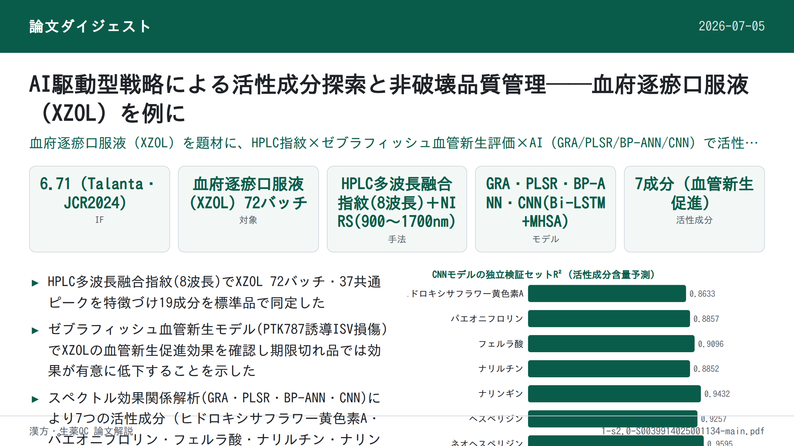

AI駆動型戦略による活性成分探索と非破壊品質管理──血府逐瘀口服液（XZOL）を例に

書誌情報
- 標題（原題）: An AI-driven strategy for active compounds discovery and non-destructive quality control in traditional Chinese medicine: A case of Xuefu Zhuyu Oral Liquid
- 著者: Lele Gao, Liang Zhong, Tingting Feng, Jianan Yue, Qingqing Lu, Lian Li, Aoli Wu, Guimei Lin, Qiuxia He, Kechun Liu, Guiyun Cao, Zhaoqing Meng, Lei Nie, Hengchang Zang
- 所属: 山東大学 斉魯医学部 薬学院（NMPA医薬品技術評価研究重点実験室）／斉魯工業大学（山東省科学院）生物研究所／山東鴻済堂製薬集団有限公司（いずれも中国・山東省）
- 掲載誌・巻号・DOI: Talanta 287 (2025) 127627, DOI: 10.1016/j.talanta.2025.127627
- インパクトファクター: 6.71（Talanta, JCR2024 / Clarivate）
- 受理経過: 2024年12月13日受理（受付）／2025年1月21日改訂受理／2025年1月22日採択／2025年1月23日オンライン公開。© 2025 Elsevier B.V.（テキスト・データマイニング、AI学習等を含む全権利留保）
- 資金: 山東省重点研究開発計画（2022CXGC020515）、山東省自然科学基金（ZR2022MB026）、国家重点研究開発計画（2019YFC1711200）
- 利益相反: 著者らは開示すべき利益相反はないと宣言している
補足: 原文にはCRediT著者貢献声明（執筆・方法論・妥当性確認・形式解析・監修・資源提供・資金獲得・プロジェクト管理・概念立案など各著者の役割分担）が付されているが、実務的示唆には直結しないため本解説では省略し、資金・利益相反のみ上に記載した。
要旨（Abstract）
伝統中薬（TCM）の近代化・国際化は、活性成分が不明確であることと品質管理が不十分であることという課題に直面している。本研究では、血府逐瘀口服液（Xuefu Zhuyu Oral Liquid; XZOL）を例に、活性成分探索と非破壊品質管理のための人工知能（AI）駆動型戦略を提案した。まず、多波長融合高速液体クロマトグラフィー（HPLC）指紋を構築し、XZOLの化学組成を包括的に特徴づけた。次に、PTK787誘導の分節間血管（intersegmental vessels; ISVs）損傷ゼブラフィッシュモデルにおいて、XZOLの血管新生促進効果を評価した。続いて、グレー関連解析（GRA）、部分最小二乗回帰（PLSR）、誤差逆伝播型人工ニューラルネットワーク（BP-ANN）、および畳み込みニューラルネットワーク（CNN）を組み込んだスペクトル効果関係モデルにより、7つの血管新生促進活性化合物（ヒドロキシサフラワー黄色素A、パエオニフロリン、フェルラ酸、ナリルチン、ナリンギン、ヘスペリジン、ネオヘスペリジン）を発見した。さらに、これらの化合物の有効性はネットワーク薬理学、分子ドッキング、ゼブラフィッシュを通じてさらに検証された。最後に、近赤外分光法（NIRS）に基づく迅速・非破壊的な品質管理システムを確立した。本システムは、多変量統計的工程管理（MSPC）のHotelling T²統計量とDModX（Distance to Model X）統計量を組み合わせることで期限切れ試料と正常試料を効果的に判別し、CNNモデルと双方向長短期記憶（Bi-LSTM）およびマルチヘッド自己注意（MHSA）ネットワークを統合することで、上記活性成分の含量を精度良く予測した。本研究は、TCMの活性成分に基づく包括的品質管理戦略を提供することにより、AI駆動型戦略がTCMの標準化と国際的な認知の向上に資する可能性を裏づけるものである。
キーワード: 人工知能（Artificial intelligence, AI）；スペクトル効果関係（Spectrum-effect relationship）；品質管理（Quality control）；HPLC指紋（HPLC fingerprints）；近赤外分光法（Near-infrared spectroscopy）；活性成分（Active compounds）
1. 序論（Introduction）
伝統中薬（TCM）は、TCM理論の指導のもとで植物・鉱物・動物に由来する幅広い薬用物質を包含し、数千年にわたり、とくに東アジアにおいて医療に重要な役割を果たしてきた。しかし、TCMの近代化と国際化は、いくつかの重大な課題によって制約されている。主として、治療効果の責を負う活性成分・作用機序の不明確さ、および製剤の品質のばらつきである。現行のTCM品質評価手法は、しばしば1つないし少数のマーカー化合物の定量に焦点を当てている。しかし、この手法はTCMの多成分・多標的という性質を捉えるには不十分である。品質規格として選ばれた成分は、臨床効果と関連しない、あるいは臨床効果を十分に代表していない場合がある。これらの課題が、TCM製剤の標準化とその臨床実務における一貫した有効性の確保を複雑にしている。
数ある TCM製剤のなかでも、血府逐瘀口服液（XZOL）は、広範な臨床使用実績と有効性、とくに冠状動脈性心疾患（coronary heart disease; CHD）などの心血管疾患（cardiovascular diseases; CVDs）治療における有効性で際立っている。TCMにおいてCHDは「胸痺（chest impediment）」「心痛（heart pain）」の範疇に分類され、血脈の閉塞（血瘀）が主たる病機とされる。XZOLは血府逐瘀湯を基とする製剤であり、清朝の医家・王清任（Wang Qingren）により著された『医林改錯（Yilin Gaicuo）』に初めて記載された中国十大名方の一つである。その処方は11種の薬用生薬から構成され、活血化瘀（血行を促進し瘀血を除く）の作用を持つ。臨床効果が確立している一方で、XZOLの治療効果、とくに血管新生促進活性の責を負う活性成分は、これまで大部分が未解明であった。さらに、中国薬局方（2020年版, Ch.P.）に収載されている現行のXZOLの品質規格は不十分であり、主としてアミグダリン、パエオニフロリン、ナリンギンといった少数のマーカー化合物にのみ焦点を当てており、より広範な活性成分群を十分に扱っていない。これらの制約を克服するには、現代的な分析ツールとデータ駆動型アプローチが不可欠であり、TCMの多成分医薬品における包括的な品質管理に資する。
しかし、従来のクロマトグラフィー技術は労力・費用がかかるうえに破壊的であり、試料の消耗や品質管理工程における非効率を招く。これらの欠点は、より環境負荷が小さく効率的で非破壊的な品質管理技術の必要性を浮き彫りにする。この点で、近赤外分光法（NIRS）は有望な解決策として登場し、TCMの品質管理に広く応用されてきた。さらに、携帯型NIR分光計はコンパクトさ・迅速な検出・低コストという大きな利点を備え、ベンチトップ機種に匹敵する高い感度と性能を提供するため、リアルタイム・現場分析に理想的である。
人工知能（AI）とTCMの融合は、先端技術と古来の医療実践との変革的な交差点を代表するものである。AI、とくに機械学習は、薬用材料の精密な真贋鑑定を可能にし、処方の最適化を支援し、治療効果・安全性を予測し、個別化された服薬提案を提供する。既存の手法と比較して、AIはスペクトルデータと治療効果との間の微妙な関係を明らかにすることができ、これは伝統的な手法がTCMの品質管理の限界ゆえに見落としがちな点である。これによりTCM製剤の治療効果の一貫性が確保される。
ゼブラフィッシュ（Danio rerio）は、その独自の利点から、薬物活性スクリーニングおよび安全性評価のための生体内モデルとして人気を博している。ゼブラフィッシュはヒトと高い遺伝的相同性を共有し、とくに血管新生・血管発生に関わる遺伝子においてその傾向が顕著である。この遺伝的類似性により、血管新生刺激に対する生物学的経路と応答が保存されており、ゼブラフィッシュはヒトの血管新生過程を予測する理想的なモデルとなる。ゼブラフィッシュ胚の透明性はさらに、血管発生に不可欠であり、血管新生促進効果を評価する信頼できる基盤となる分節間血管（ISVs）形成をはじめとする血管新生イベントのリアルタイム・非侵襲的な可視化を可能にする。
クロマトグラフィー指紋はTCMの品質評価における有用なツールとなっているが、化学プロファイルと薬効を十分に関連づけられないという限界がある。この限界に対処するため、統計的手法を用いて化学成分と生物活性を結びつけるスペクトル効果関係解析が、活性成分発見のための有望な技術として導入されてきた。この手法は単一の化学マーカーのみに依拠することの限界を克服し、TCMの品質管理において強力なツールを提供し、その内在的な品質を反映する。
本研究は、活性成分探索と非破壊品質管理のためのAI駆動型戦略を提案し、XZOLの血管新生促進作用を例とした。研究の流れ（図1）は以下の手順からなる。(1) 高速液体クロマトグラフィー（HPLC）指紋を構築し全体の化学組成を特徴づける；(2) PTK787誘導のISV損傷ゼブラフィッシュにおいて、異なるバッチのXZOLの血管新生促進効果を評価する；(3) スペクトル効果関係解析を通じて活性成分を発見する；(4) ネットワーク薬理学、分子ドッキング、ゼブラフィッシュを通じて活性成分を検証する；(5) NIRSに基づく迅速・非破壊的な品質管理システムを確立する。この戦略は、TCMの活性成分に基づく包括的品質管理システムを提供し、伝統と近代の橋渡しをしつつ、TCMの国際標準化・国際化を促進するものである。
2. 材料と方法（Materials and Methods）
2.1. 試料と試薬
計72バッチのXZOL（バッチ番号2011004～2401001）を鴻済堂有限公司（Hongjitang Co., Ltd.）から入手した。詳細は補足資料 Table S1に示されている（原文参照）。
標準品として、クロロゲン酸（Chlorogenic acid, CAS: 327-97-9）、ヒドロキシサフラワー黄色素A（Hydroxysafflor Yellow A, CAS: 146087-19-6）、アミグダリン（Amygdalin, CAS: 29883-15-6）、パエオニフロリン（Paeoniflorin, CAS: 23180-57-6）、フェルラ酸（Ferulic acid, CAS: 1135-24-6）、エリオシトリン（Eriocitrin, CAS: 13463-28-0）、ナリルチン（Narirutin, CAS: 14259-46-2）、ナリンギン（Naringin, CAS: 10236-47-2）、ヘスペリジン（Hesperidin, CAS: 520-26-3）、ネオヘスペリジン（Neohesperidin, CAS: 13241-33-3）、ナリンゲニン（Naringenin, CAS: 480-41-1）、グリチルリチン酸アンモニウム塩（Glycyrrhizic acid ammonium salt, CAS: 53956-04-0）、リクイリチゲニン（Liquiritigenin, CAS: 578-86-9）、ケンフェロール（Kaempferol, CAS: 520-18-3）、ノビレチン（Nobiletin, CAS: 478-01-3）を成都Herbpurify社（HPLC純度98％以上）より購入した。また、シネフリン（Synephrine, CAS: 94-07-5）、5-ヒドロキシメチルフルフラール（5-Hydroxymethylfurfural, CAS: 67-47-0）、没食子酸（Gallic acid, CAS: 149-91-7）は Yuanye Bio-Technology社（HPLC純度98％以上）より、タンゲレチン（Tangeretin, CAS: 481-53-8）はPureChem Standard社（HPLC純度98％以上）より購入した。クロマトグラフィー用アセトニトリルは安徽TEDIA社、ギ酸はAladdin Biochemical Technology社、精製水は娃哈哈集団（Wahaha Group）（中国）より供給を受けた。
プロナーゼE（Pronase E, CAS: 9036-06-0）、トリカイン（Tricaine, CAS: 582-33-2）、フェニルチオ尿素（PTU, CAS: 103-85-5）は Soleibao Technology社より、バタラニブ（Vatalanib, CAS: 212141-54-3, PTK787）は南通飛宇生物技術（Nantong Feiyu Biotechnology）社より購入した。丹紅注射液（Danhong injection; DHI、バッチ番号230610112）は山東歩長製薬（Shandong Buchang Pharmaceutical）社より入手した。また、DMSOは上海生工生物工程（Sangon Biotech）社、CuSO₄・5H₂Oその他の各種試薬は国薬集団化学試剤（Sinopharm Chemical Reagent）社より購入した。
2.2. XZOLのHPLC指紋
XZOLの化学組成は、ダイオードアレイ検出器（DAD）を備えたAgilent 1260 HPLCシステムを用いて特徴づけた。クロマトグラフィー分離はAgilent ZORBAX SB-C18カラム（250 mm × 4.6 mm, 5 μm）で行った。移動相は0.2％ギ酸水溶液（A）とアセトニトリル（B）とし、勾配溶出は 0–15 min: 3–12％B；15–30 min: 12–16％B；30–40 min: 16–20％B；40–50 min: 20–26％B；50–60 min: 26–45％B；60–70 min: 45–95％B；70–80 min: 95％B とし、流速は1.2 mL/minとした。カラム温度は35℃、注入量は10 μLとした。検出は210 nm、237 nm、254 nm、280 nm、300 nm、330 nm、367 nm、403 nmの各波長で行った。
2.3. ゼブラフィッシュにおけるXZOLの血管新生促進効果
2.3.1. ゼブラフィッシュ胚の採取
血管内皮細胞が増強緑色蛍光タンパク質（EGFP）を発現するトランスジェニック系統 Tg(flk1:EGFP)ゼブラフィッシュは、山東省科学院薬物スクリーニング重点実験室より提供を受け、これにより血管系を直接観察できる。胚は雌雄成魚を1:1で交配して得た。受精後、胚を洗浄し、5 mM NaCl、0.17 mM KCl、0.33 mM CaCl₂・2H₂O、0.16 mM MgSO₄・7H₂Oおよび0.1％メチレンブルーからなる培養液に移した。培養液は28℃に維持した。メラニン産生を抑制するため、受精後6時間（hpf）の時点で培養液に0.003％のPTUを添加した。すべてのゼブラフィッシュの使用は、山東省科学院生物研究所の実験動物福祉倫理委員会の承認（承認番号: SWS20210815）のもとで行われた。
2.3.2. ゼブラフィッシュの処置
XZOLの血管新生促進効果を評価するため、原系統由来のゼブラフィッシュを用いた。本実験に先立ち、XZOLの安全濃度を評価し、PTK787およびXZOLの至適濃度を決定した。21–22 hpfの時点で、1 mg/mLのプロナーゼE溶液を用いて胚膜を除去した。続いて健全な発生を示す胚を選別し、24穴プレートに1穴あたり10個体ずつ配置した。4群を設定した：対照群、モデル群（PTK787 0.15 μg/mL）、陽性対照群（PTK787 0.15 μg/mLおよびDHI 30 μL/mL）、XZOL群（PTK787 0.15 μg/mLおよび各バッチのXZOL 2 μL/mL）。24時間後、倒立蛍光顕微鏡IX73（Olympus, 日本）でゼブラフィッシュの画像を撮影した。ISVsの総長はImageJ-win64ソフトウェアで定量し、血管新生促進効果は次式(1)により算出した。一元配置分散分析（one-way ANOVA）はGraphPad Prism 9.5.0ソフトウェアで実施し、有意水準はp<0.05とした。すべての実験は3連で実施した。
血管新生促進効果（％）= (L_control − L_model) / L_model × 100％ … 式(1)
（L_sample：XZOLまたはDHI投与群のISVs長、L_control：対照群のISVs長、L_model：モデル群のISVs長）
2.4. スペクトル効果関係解析
2.4.1. グレー関連解析（GRA）
GRAは複数変数間の相関度を評価するための多因子解析法である。本研究では、GRAを用いてXZOLの血管新生促進効果とHPLCピーク面積との関係を評価した。関連度0.6超は共通ピークと血管新生促進効果との間に相関があることを示し、0.8超は高度に有意な相関を示唆する。
2.4.2. 部分最小二乗回帰解析（PLSR）
PLSRはHPLCピーク面積（X）と血管新生促進効果（Y）の線形関係を解析するための重回帰手法である。本研究では、回帰係数の正負が血管新生に対する化合物の作用の方向を示し、正の回帰係数を持つ化合物はISVsの成長を促進する、すなわち血管新生における役割を持つと同定された。変数重要度投影（VIP）値は各化合物の血管新生への重要性を示し、VIP＞1の化合物は血管新生への重要な寄与因子とみなされた。
2.4.3. 誤差逆伝播型人工ニューラルネットワーク（BP-ANN）
BP-ANNは、入力層・隠れ層・出力層からなる誤差逆伝播法を用いたフィードフォワード型ニューラルネットワークである。本研究ではBP-ANNを平均影響値（mean impact value; MIV）解析と併用し、HPLCピーク面積が血管新生促進効果に及ぼす影響を定量化した。具体的には、入力値に±10％の調整を加え、独立変数の変化が出力結果に及ぼす影響値（IV）を算出することで各変数の影響を評価した。MIVはIVの平均値であり、その正負が各入力と出力の相関の方向を示し、絶対値が影響の程度を表す。このBP-ANNとMIV解析の組み合わせにより、モデルの解釈可能性と信頼性がともに向上し、どの化合物が血管新生に最も寄与しているかを発見する助けとなった。
2.4.4. 畳み込みニューラルネットワーク（CNN）
CNNは構造化データを処理・解析するために設計された先進的な深層学習アーキテクチャである。本研究では、CNNモデルを用いて血管新生促進効果に関連する活性成分を発見した。CNNアーキテクチャに時系列的な依存関係をモデル化する能力を持たせるため、双方向長短期記憶（Bi-LSTM）ネットワーク（過去・未来双方の入力から時間的依存関係を捉える一種の再帰型ニューラルネットワーク）を統合した。この双方向学習アプローチにより、モデルは時系列データの文脈をより完全に理解でき、動的な設定のなかでパターンを時間軸で解析するタスクにとくに重要となる。Bi-LSTM層の導入により、モデルはデータをより包括的に理解し、複雑なパターンを検出する能力と動的な文脈理解を要するタスクの性能が向上する。さらに、CNNアーキテクチャ内にマルチヘッド自己注意（MHSA）機構を組み込んだ。これにより、モデルは複数の文脈関連特徴に同時に注目できる。従来の注意機構と異なり、MHSAはモデルがデータの各部分に独立して注目することを可能にし、さまざまな観点からデータ内の複雑な関係を捉える。これにより、タスクとの関連度に応じて各特徴に異なる重要度を割り当てられるため、モデルが複雑なパターンを処理・理解する能力が向上する。
これらの改良（双方向学習のためのBi-LSTMと多面的注意のためのMHSA）は、総合的にCNNモデルの性能を向上させる。これらにより、モデルは複雑・高次元のデータを効率的に処理でき、より正確な予測と解釈可能性の向上につながる。さらに、各機能層での特徴マップの可視化により、変数の変動を動的に表現し、鍵となる変数を特定するための新たな知見が得られる。
2.5. 活性成分の検証
スペクトル効果関係解析で発見された活性成分の治療可能性を包括的に検証するため、ネットワーク薬理学および分子ドッキング技術を用いた。これらの手法により、潜在的な標的と背後の経路を系統的に探索し、治療効果のin silicoでの初期的な検証を行った（詳細な手法は補足資料に記載）。これらの知見をさらに裏づけるため、ゼブラフィッシュモデルを用いたin vivo検証を実施した。標準化合物はDMSOに溶解し100 mMのストック溶液として調製し、実験群は一連の希釈により効果を評価した。
2.6. 迅速・非破壊品質管理システム
2.6.1. システム構築とスペクトル取得
本研究では、タングステンハロゲン光源（HL-2000-FHSA-LL, Ocean Optics, 中国）、3Dプリント製サンプルセル、携帯型NIR分光計（SW2540, OTO Photonics Inc., 中国）、2本の光ファイバー（広州京仪光電技術有限公司, 中国）、および自社開発ソフトウェア（補足資料 図S1）からなる自社開発NIRSシステムを用いた。本システムは、直径約19 mmの精密に調整されたバイアルホルダー内に試料を無傷のまま保持することで、光路の精密な整合を保ちつつ非侵襲的なスペクトル解析手法を導入した。
スペクトル取得の前に、装置の温度変動を安定範囲に収めるため、1時間の安定化を行った。波長範囲は約900～1700 nm、変数は248個とした。パラメータは積算時間8 ms、各スペクトルは50回スキャンの累積平均値として最適化した。ソフトウェアの原出力データは光強度であり、生スペクトルは以下の式(2)により原データを変換して取得した。参照スペクトルは空気により、暗スペクトルは光源を消灯して取得した。操作誤差を低減するため、各試料につき3回連続してスペクトルを取得し、その平均スペクトルを最終スペクトルとした。本システムはスペクトルの信頼性を高めるとともに試料の完全性を保持し、非破壊分析の可能性を示すものである。
A = −log[(I_sample − I_dark) / (I_ref − I_dark)] … 式(2)
（I_sample、I_ref、I_darkはそれぞれ試料・参照（空気）・暗（光源オフ）の強度値）
2.6.2. モデル構築と評価
XZOLの品質管理は定性・定量の両側面から構成した。定性面では、実試料由来のXZOL（72試料）の使用期限を評価した。定量面では、濃縮・希釈法により拡張したXZOL中の活性成分含量を検出した（280試料）。
定性解析には、主成分分析（PCA）を用いて元の変数を主成分（PCs）に変換し、試料間の分散を捉えることで高次元の複雑なデータを縮約した。PCAに基づく多変量統計的工程管理（MSPC）技術、具体的にはHotelling T²統計量とDModX（Distance to Model X）統計量を用いて、試料の使用期限を評価した。
定量解析には、線形のPLSRと非線形のCNNモデルを適用して活性成分の含量を予測した。PLSRモデルは異なる前処理法・変数選択法を用いて構築し、頑健なモデル開発アプローチを示した。CNNモデルにはBi-LSTMとMHSAを付加し、スペクトル効果関係解析で用いたものと同一のネットワーク構造を採用した。この革新的な統合により、モデルの予測力が高まるとともに、品質管理と活性成分探索の文脈における深層学習アーキテクチャの汎用性・適応性が浮き彫りとなる。モデルの有効性は、較正（R²c）・検証（R²v）・独立検証（R²t）の決定係数、および較正（RMSEC）・検証（RMSEV）・独立検証（RMSET）の二乗平均平方根誤差により判定した。R²値が高くRMSE値が低いモデルほど、より信頼性・精度が高いとみなした。さらに、残差予測偏差（RPD）を用いてモデルを評価し、許容閾値はRPD＞2とした。対応のあるt検定（α=0.05）により、NIRS予測値とHPLC実測値の間に有意差があるかを評価した。
3. 結果と考察（Results and Discussions）
3.1. HPLC指紋の構築
TCMの複雑さを単一波長のクロマトグラムでは十分に捉えられないという課題に対処するため、多波長融合HPLC指紋を採用し、XZOLの包括的な品質評価のために3次元情報を最大限に活用した。HPLC指紋は各波長で取得し（図2(a)）、最大値融合法を用いて多波長融合HPLC指紋（黒線）を作成した。この指紋は理論上、8波長にわたるデータの投影を表す。210 nm付近では溶媒を含む多くの化合物が強い応答を示すため、この波長はアミグダリンの定量にのみ用いた。異なるXZOLバッチの融合HPLC指紋を比較すると（図2(b)）、37の共通ピークが観測され（図2(c)）、これらは全ピーク面積の95％超を占めた。このうち19ピークが標準品により同定された：シネフリン(1)、没食子酸(6)、5-ヒドロキシメチルフルフラール(8)、クロロゲン酸(13)、ヒドロキシサフラワー黄色素A(14)、アミグダリン(16)、パエオニフロリン(19)、フェルラ酸(20)、エリオシトリン(21)、ナリルチン(24)、ナリンギン(25)、ヘスペリジン(26)、ネオヘスペリジン(27)、リクイリチゲニン(29)、ナリンゲニン(31)、ケンフェロール(32)、グリチルリチン酸(34)、ノビレチン(36)、タンゲレチン(37)。
融合HPLC指紋は直線性・精度・再現性・安定性・回収率について妥当性を確認した。表1にまとめるとおり、直線性の相関係数はすべて0.9900を上回り、精度・再現性・安定性の相対標準偏差（RSD）はいずれも5.00％未満であった。回収率は95.01％～109.38％の範囲にあり、RSDは5.00％未満であった。これらの結果は、本HPLC指紋法が優れた精度・正確性・安定性・再現性を有し、XZOLの品質評価に適していることを裏づける。しかしながら、72バッチのXZOLにおけるアミグダリン・パエオニフロリン・ナリンギンの平均含量はそれぞれ0.85、0.74、1.60 mg/mLであり、現行の中国薬局方が定める最低基準値（それぞれ0.67、0.25、0.66 mg/mL）を大幅に上回っていた。期限切れ試料でさえこれらの基準を満たしており、現行の品質管理基準の不十分さがさらに浮き彫りとなった。
表1. XZOL中の各成分の直線回帰・精度・再現性・安定性・回収率
| ピークNo. | 化合物 | 波長(nm) | 検量線 | R² | 直線範囲(mg/mL) | 精度RSD%(n=6) | 再現性RSD%(n=6) | 安定性RSD%(n=6) | 回収率%(n=6) | 回収率RSD%(n=6) |
|---|---|---|---|---|---|---|---|---|---|---|
| 1 | シネフリン | 280 | y=1110.9x−6.5726 | 0.9997 | 0.0226–0.9664 | 1.58 | 0.97 | 1.71 | 99.79 | 2.65 |
| 6 | 没食子酸 | 280 | y=11509x+24.82 | 0.9998 | 0.0074–0.5888 | 1.88 | 2.12 | 2.01 | 108.62 | 2.97 |
| 8 | 5-ヒドロキシメチルフルフラール | 280 | y=29621x−160.1 | 0.9997 | 0.0100–0.8000 | 3.60 | 1.63 | 3.52 | 105.32 | 3.04 |
| 13 | クロロゲン酸 | 330 | y=9584.6x+30.816 | 0.9930 | 0.005095–0.5095 | 2.05 | 0.44 | 2.93 | 95.01 | 2.15 |
| 14 | ヒドロキシサフラワー黄色素A | 403 | y=5951x−15.454 | 0.9995 | 0.0090–1.0824 | 1.86 | 1.35 | 1.95 | 102.32 | 3.91 |
| 16 | アミグダリン | 210 | y=2736.1x−96.214 | 0.9988 | 0.0204–4.0720 | 2.79 | 2.57 | 3.40 | 103.87 | 2.88 |
| 19 | パエオニフロリン | 237 | y=3480.93x+6.63 | 0.9998 | 0.0404–4.8480 | 0.81 | 1.95 | 1.88 | 103.08 | 0.26 |
| 20 | フェルラ酸 | 300 | y=16962x+25.917 | 0.9999 | 0.0249–0.9952 | 1.68 | 1.16 | 1.98 | 107.58 | 4.70 |
| 21 | エリオシトリン | 280 | y=6294.2x+2.7652 | 0.9998 | 0.0020–0.0800 | 1.88 | 2.40 | 1.38 | 109.38 | 2.46 |
| 24 | ナリルチン | 280 | y=5904.1x+15.652 | 0.9994 | 0.0214–0.6840 | 0.11 | 0.25 | 0.36 | 99.04 | 0.33 |
| 25 | ナリンギン | 280 | y=6114.3x+146.47 | 0.9992 | 0.0242–2.8992 | 0.37 | 0.25 | 0.35 | 99.98 | 0.91 |
| 26 | ヘスペリジン | 280 | y=8584.4x−21.938 | 0.9994 | 0.0045–0.7216 | 0.11 | 0.19 | 0.40 | 103.13 | 2.61 |
| 27 | ネオヘスペリジン | 280 | y=7158.2x−17.973 | 0.9997 | 0.0291–2.7912 | 0.07 | 0.17 | 0.29 | 101.58 | 0.96 |
| 29 | リクイリチゲニン | 237 | y=20861x−98.649 | 0.9991 | 0.0048–0.3824 | 0.55 | 0.16 | 0.43 | 96.29 | 2.69 |
| 31 | ナリンゲニン | 280 | y=14097x+2.9713 | 0.9999 | 0.0019–0.1499 | 1.26 | 0.64 | 1.00 | 99.75 | 2.93 |
| 32 | ケンフェロール | 367 | y=13535x−27.958 | 0.9969 | 0.0199–0.3984 | 3.20 | 3.46 | 3.34 | 107.11 | 1.81 |
| 34 | グリチルリチン酸 | 237 | y=567.16x−13.545 | 0.9918 | 0.0330–0.3304 | 0.32 | 0.80 | 0.59 | 108.32 | 1.98 |
| 36 | ノビレチン | 330 | y=14925x−1.8158 | 0.9999 | 0.0016–0.1280 | 0.11 | 0.54 | 0.64 | 98.11 | 1.65 |
| 37 | タンゲレチン | 330 | y=14305x+3.2934 | 0.9999 | 0.0015–0.1176 | 0.31 | 0.54 | 0.53 | 102.64 | 2.80 |
XZOLバッチ間における融合HPLC指紋の類似度をヒートマップで算出・可視化した。期限切れ試料を除き、すべてのバッチで指紋の類似度は0.9を上回り、品質の一貫性と使用期限設定の妥当性が確認された（図2(d)）。PCAによる次元縮約の結果、PC1とPC2はそれぞれ全変動の41.79％と24.40％を占め、累積寄与率は66.19％であった（図2(e)）。特筆すべきは、S1～S7のような期限切れ試料が95％信頼区間を超えており、正常試料と有意な差異を示したことである。階層的クラスター分析（HCA）はさらに、「ユークリッド」距離と「平均連結」法を用いて試料間を判別し、樹形図（デンドログラム）が作成された（図2(f)）。期限切れ試料と正常試料の相対距離は約40であった。加えて、使用期限に近いS9・S8・S12・S13の各試料も異常試料として同定された。
融合HPLC指紋の類似度・HCA・PCAの各結果は、本研究で構築した多波長融合HPLC指紋が期限切れ試料と正常試料の判別に有効であることを総合的に示した。同定されたピークのなかでは、ナリンギンとネオヘスペリジンが正常試料と期限切れ試料の間で有意な差を示した。XZOLの血管新生促進効果は複数の化学成分の影響を受けていたため、活性成分を発見するためにスペクトル効果関係モデルのようなさらなるケモメトリクス解析が必要であった。
3.2. ゼブラフィッシュモデルにおける血管新生促進効果の評価
ゼブラフィッシュ胚に対するXZOLの毒性試験により、最小致死濃度（LC1）、10％致死濃度（LC10）、半数致死濃度（LC50）はそれぞれ4.090、5.580、7.418 μL/mLと確定された（補足資料 図S2）。図3(a)・(b)に示すように、ISVsの長さはPTK787濃度の増加とともに漸減した。0.15 μg/mLにおいてPTK787はISVsの成長率を顕著に抑制し、一方でXZOLはこの抑制を効果的に相殺した（代表画像は補足資料 図S3）。図3(c)から明らかなように、1・2・4 μL/mLのXZOLはISVsの成長を有意に回復させ、2 μL/mLで最大の効果が認められた（代表画像は補足資料 図S4）。
各バッチのXZOLについてさらに評価したところ、その血管新生促進効果が確認された（図3(d)）。ISVsの成長率は対照群と比較してモデル群で有意に低く、陽性対照群はモデル群と比較して有意に高かった。試験したすべてのXZOLバッチで血管新生促進効果が認められたが、バッチ間で差異が観察され（図3(e)）、これらの変動は正規分布に従った（図3(f)）。さらに、期限切れXZOL試料の解析では正常試料と比較して血管新生促進効果が低いことが明らかとなり（図3(g)）、貯蔵に伴うXZOLの化学組成の変化が示唆された。貯蔵中の成分変化を定量するにはさらなる解析が必要であった。
3.3. スペクトル効果関係による活性成分の発見
GRAは共通ピーク面積と血管新生促進効果の相関を探索するために用いた。データ変換とグレー関連度の算出の結果、すべてのピークで関連度は0.6を上回り、XZOLの血管新生促進効果が複数成分の相乗作用に由来する可能性が高いことが示された。図4(a)に示すとおり、7化合物（P3, P28, P30, P31, P32, P36, P37）は低相関領域（関連度<0.8）にあり、血管新生への寄与が限定的であることが示唆された。このうちピーク31・32・36・37はそれぞれナリンゲニン、ケンフェロール、ノビレチン、タンゲレチンと同定された。一方、P2・P14・P18・P22・P25は最も高い関連度（>0.8）を示し、血管新生への有意な寄与が示唆された。P14とP25はそれぞれヒドロキシサフラワー黄色素Aとナリンギンと同定された。
共通ピーク面積と血管新生促進効果の関係は、さらにPLSRを用いて検討した。外れ値除去後の72バッチのXZOLを、x-y結合距離に基づくサンプルセット分割法により較正セットと検証セット（2:1比）に分けた。オートスケーリング法で前処理した後、5分割交差検証により潜在変数（LVs）を5個と決定した。構築した予測モデルは強い予測精度を示した（図4(h)）。図4(b)から、37の共通ピークのうち16化合物（P1, P14, P16, P18, P19, P20, P21, P24, P25, P26, P27, P28, P31, P32, P36, P37）のVIP値が1を超えることが明らかとなり（図4(c)）、血管新生促進における潜在的重要性が示された。特にピーク14・19・20・24・25・26・27は正の回帰係数を示し、これらの化合物が血管新生を促進する可能性が示唆された。
BP-ANNモデルは、PLSRと同じサンプル分割法を用いて構築した（アーキテクチャは図4(d)）。図4(i)に示すように、較正セット・検証セットのR²値はいずれもPLSRと比較してさらに向上し、BP-ANNモデルが優れた非線形適合効果を示すことが示された。MIV値が0を超える化合物は血管新生促進効果と正の相関を示し、MIV値が大きいほど血管新生促進作用が強いことを示す。図4(e)は、20化合物（P2, P3, P4, P6, P8, P10, P12, P14, P18, P19, P20, P22, P24, P25, P26, P27, P30, P32, P33, P35）でMIV値が0を上回ることを示し、P2・P14・P19・P20・P24・P25・P26・P27は大きなMIV値を示し、これらの化合物が血管新生を促進しうることが示唆された。P5・P11・P16・P28・P34・P36・P37のMIV値は0未満で絶対値が大きく、これらの化合物が血管新生を抑制しうることが示唆された。
CNNの強力な特徴抽出能力により、共通ピーク面積と血管新生促進効果との間の複雑な関連を明らかにすることができた。本研究で用いたCNNのアーキテクチャは図4(g)に示す。CNNモデルの結果（図4(j)）は、PLSR・BP-ANNよりも優れた性能を示した。図4(f)の主要層の可視化では、P14, P15, P18, P19, P20, P24, P25, P26, P27に明瞭な特徴が認められた。
スペクトル効果関係解析（GRA・PLSR・BP-ANNとMIVの統合・CNN）を通じて、XZOLの共通ピーク面積と血管新生促進効果の関係を総合的に解析した結果、7つのクロマトグラフィーピークが潜在的活性成分として予備的に同定された：ヒドロキシサフラワー黄色素A(14)、パエオニフロリン(19)、フェルラ酸(20)、ナリルチン(24)、ナリンギン(25)、ヘスペリジン(26)、ネオヘスペリジン(27)。続いて、これらの化合物の有効性はネットワーク薬理学、分子ドッキング、ゼブラフィッシュを通じてさらに検証された。
3.4. ネットワーク薬理学・分子ドッキング・ゼブラフィッシュモデルによる活性成分の検証
ネットワーク薬理学的予測では、化合物標的と疾患（CHD）標的に共通する標的が計99個見出され、疾患治療における重要性が強調された（図5(a)）。化合物-標的-疾患ネットワークを構築・解析した結果（図5(b)）、7化合物すべてが高い次数中心性（degree centrality）を示すことが明らかとなった。これは、これらの化合物がCHD治療に関連する主要な分子ネットワークの調節において中心的な役割を果たしうることを示唆する。さらに、タンパク質間相互作用（PPI）解析により、ALB、GAPDH、IL1B、PTGS2、FN1、EGFR、MMP9、CASP3、STAT3、SCRを含むコア標的が、CHDにおける治療作用の中心であることが示された（図5(c)）。DAVIDプラットフォームによる遺伝子オントロジー（GO）濃縮解析では、タンパク質分解や遺伝子発現の負の制御を含む重要な生物学的過程（BP）が明らかとなった。細胞成分（CC）は主に細胞膜に関連し、分子機能（MF）は同一タンパク質結合において重要な役割を示した（図5(d)）。KEGG（Kyoto Encyclopedia of Genes and Genomes）経路濃縮解析では、PI3K-AktシグナルおよびVEGFシグナル伝達経路など、XZOLが関与するいくつかの重要な経路がさらに解明された（図5(e)）。ネットワーク薬理学に加え、分子ドッキングの結果（図5(f)）は、活性化合物とコア標的との間に強い結合親和性（≤−4.0 kcal/mol）を示し、その治療可能性を裏づけた。とくにナリルチンの治療関連性が支持された。フェルラ酸は他の化合物と比較して結合親和性が弱かったが、それでも全体の有効性に有意義に寄与していた。
これら7つの活性成分の血管新生調節作用はゼブラフィッシュモデルを用いて検証した（図5(g)–(m)、代表画像は補足資料 図S5）。ISVsの成長率はモデル群で対照群と比較して有意に抑制された。7つの血管新生促進候補化合物のすべてでISVs成長の増強が認められたが、フェルラ酸のみ高濃度で効果が減弱し、これは分子ドッキングの結果とも一致した。これらの結果は、スペクトル効果関係モデル、とくにBP-ANNアプローチが活性成分発見に有効であることを裏づけた。最終的に、ヒドロキシサフラワー黄色素A、パエオニフロリン、フェルラ酸、ナリルチン、ナリンギン、ヘスペリジン、ネオヘスペリジンが血管新生促進の活性成分として確認され、活性成分発見におけるAI駆動型戦略の革新的な役割が強調された。
3.5. 迅速・非破壊品質管理システムの確立
本研究では、自社開発のNIRSシステムを用いてスペクトル取得を行った（図6(a)）。全XZOL試料の生NIRスペクトルを図6(b)に示し、本システムが非破壊的な手法で高品質なデータを取得できることが実証された。
3.5.1. 定性判別
Hotelling T²統計量とDModX統計量を用いたコントロールチャート解析により、XZOL試料を厳密に評価した。管理限界はそれぞれ2.4766および10.1665と設定された。図6(c)・(d)に示すとおり、試料S1・S2・S3・S5・S7～S13はHotelling T²限界を超え、試料S1～S7・S9・S11～S13はDModX限界を超えた。この2つの統計指標の統合により、期限切れ試料・正常試料の双方を精密に判別することができ、TCM生産におけるライフサイクル管理という重要課題に対処した。
3.5.2. 定量検出
外れ値除去後（補足資料 図S6）、残りの試料を較正・検証・独立検証セットに3:1:1の比率で分割し、ヒドロキシサフラワー黄色素A、パエオニフロリン、フェルラ酸、ナリルチン、ナリンギン、ヘスペリジン、ネオヘスペリジンの7活性成分について、PLSRとCNNの両モデルを構築した。表2に詳細を示す性能パラメータから、R²c・R²vはいずれも0.80を上回り、RPDv値は2を大きく上回ることが明らかとなり、検証セットにおける頑健な予測能力が示された。独立検証試料についても、すべてのモデルでR²t値が0.80超、RPD値が2超であった。加えて、対応のあるt検定により、NIRS予測値とHPLC実測値の間に有意差は認められず（P>0.05）、活性成分の定量における従来のHPLC法の代替としてのNIRSの信頼性・正確性が検証された。とくにCNNモデルはRPDt値がわずかに高く、予測値が1:1直線に近い分布を示し（図6(e)–(k)）、PLSRモデルより一貫して精度が高かった（補足資料 図S7）。これは、CNNモデルがXZOL中の活性成分定量においてPLSRよりも精密・信頼できる予測を提供することを示している。計算速度の観点では、CNNモデルはそのより複雑なアーキテクチャゆえに、PLSRと比較して訓練に長い時間を要する。しかし、一度訓練を終えれば、CNNモデルは、とくにリアルタイム応用において、著しく高速な予測時間を提供する。この特性により、迅速な意思決定が製造中の一貫性・品質保証に不可欠なTCM品質管理において、CNNは高い適性を持つ。さらに、CNNの大規模データ処理能力と新パターンへの適応能力は、動的かつ高スループットな環境における有用性をさらに高める。
表2. PLSRおよびCNNモデルのパラメータ結果
| モデル | 活性成分 | RMSEC(mg/mL) | R²c | RMSEV(mg/mL) | R²v | RPDv | RMSET(mg/mL) | R²t | RPDt | P値(α=0.05) |
|---|---|---|---|---|---|---|---|---|---|---|
| PLSR | ヒドロキシサフラワー黄色素A | 0.0273 | 0.8178 | 0.0300 | 0.7947 | 2.2070 | 0.0240 | 0.8355 | 2.4654 | 0.7663 |
| PLSR | パエオニフロリン | 0.1436 | 0.8666 | 0.1329 | 0.8713 | 2.7880 | 0.1320 | 0.8394 | 2.4953 | 0.8382 |
| PLSR | フェルラ酸 | 0.0068 | 0.8099 | 0.0064 | 0.8406 | 2.5050 | 0.0052 | 0.8620 | 2.6920 | 0.1094 |
| PLSR | ナリルチン | 0.0202 | 0.8455 | 0.0227 | 0.7637 | 2.0574 | 0.0181 | 0.7805 | 2.1344 | 0.1170 |
| PLSR | ナリンギン | 0.2082 | 0.9349 | 0.1776 | 0.9504 | 4.4892 | 0.1997 | 0.9210 | 3.5583 | 0.6252 |
| PLSR | ヘスペリジン | 0.0144 | 0.8986 | 0.0139 | 0.9020 | 3.1950 | 0.0141 | 0.8770 | 2.8518 | 0.2162 |
| PLSR | ネオヘスペリジン | 0.1294 | 0.9336 | 0.1229 | 0.9441 | 4.2289 | 0.1052 | 0.9515 | 4.5396 | 0.9307 |
| CNN | ヒドロキシサフラワー黄色素A | 0.0233 | 0.8664 | 0.0250 | 0.8579 | 2.6528 | 0.0219 | 0.8633 | 2.7045 | 0.2875 |
| CNN | パエオニフロリン | 0.1225 | 0.9029 | 0.1124 | 0.9080 | 3.2968 | 0.1114 | 0.8857 | 2.9576 | 0.8214 |
| CNN | フェルラ酸 | 0.0049 | 0.9023 | 0.0045 | 0.9218 | 3.5750 | 0.0042 | 0.9096 | 3.3257 | 0.1868 |
| CNN | ナリルチン | 0.0177 | 0.8813 | 0.0161 | 0.8815 | 2.9048 | 0.0131 | 0.8852 | 2.9520 | 0.1021 |
| CNN | ナリンギン | 0.2258 | 0.9234 | 0.1757 | 0.9515 | 4.5386 | 0.1694 | 0.9432 | 4.1952 | 0.6899 |
| CNN | ヘスペリジン | 0.0145 | 0.8964 | 0.0123 | 0.9233 | 3.6111 | 0.0110 | 0.9257 | 3.6685 | 0.8029 |
| CNN | ネオヘスペリジン | 0.1117 | 0.9506 | 0.1246 | 0.9425 | 4.1688 | 0.0961 | 0.9595 | 4.9681 | 0.4829 |
（注: R²c・R²v・R²t はそれぞれ較正・検証・独立検証セットの決定係数、RMSEC・RMSEV・RMSETはそれぞれ較正・検証・独立検証セットの二乗平均平方根誤差、RPDは検証・独立検証セットの残差予測偏差である）
HPLCは依然としてTCM製剤中の化合物の定性・定量分析における伝統的な手法であるが、時間を要し、多くの試料前処理を必要とし、安全性・環境上の懸念を招きうる溶媒・試薬の使用を伴う。加えて、HPLC法は一般に熟練したオペレーターと各バッチごとの広範な method validation を必要とし、大規模応用には不向きである。対照的に、NIRSは迅速・非破壊的・正確かつ環境に優しい代替手法であり、TCM製剤のバッチ間の一貫性のモニタリングと製造中の品質保証にとくに有利である。この先進的AIとNIRSの組み合わせは、TCMの品質管理に強力なツールを提供し、産業規模の応用にとって重要な迅速な意思決定の可能性をもたらす。
4. 結論（Conclusions）
TCMの近代化・国際化は、活性成分の不明確さと不十分な品質管理手法という課題によって著しく妨げられている。これらの課題に対応するため、XZOLの血管新生促進作用を事例として、AI駆動型の活性成分に基づく包括的品質管理戦略を開発した。まず、多波長融合指紋を構築し、HPLCの3次元情報を最大化することで全体の化学組成を特徴づけた。この手法は期限切れ試料を効果的に判別でき、XZOL中の19成分が同定された。次に、異なるバッチのXZOLのゼブラフィッシュにおける血管新生促進効果を評価した。XZOLの血管新生促進効果にはバッチ間のばらつきが見られたものの、すべてのバッチがPTK787誘導のISVs損傷を効果的に回復させ、期限切れXZOL試料は正常試料と比較して血管新生促進効果が低かった。続いて、GRA・PLSR・BP-ANN・CNNを統合したスペクトル効果関係モデルに基づき、7つの活性成分──ヒドロキシサフラワー黄色素A、パエオニフロリン、フェルラ酸、ナリルチン、ナリンギン、ヘスペリジン、ネオヘスペリジン──がXZOLの血管新生促進効果の主要な寄与因子として予備的に発見された。これらの化合物はさらにネットワーク薬理学、分子ドッキング、ゼブラフィッシュを通じて検証され、有意な血管新生促進効果が確認された。最後に、品質管理のボトルネックに対処するため、迅速・非破壊的な活性成分ベースのNIRSシステムを確立した。本システムはHotelling T²とDModX統計量を組み合わせることでXZOLの期限切れ試料の判別を可能にし、Bi-LSTMおよびMHSAネットワークを統合したCNNモデルにより活性成分の含量を精度良く予測できた。
本AI駆動型戦略は、TCMに関する科学的理解を進展させるだけでなく、その治療効果の一貫性を確保するものである。しかし、ゼブラフィッシュモデルを用いた血管新生促進作用への注目は知見をもたらす一方、他の潜在的な生物学的効果を見落としている。今後の研究では、抗炎症・抗酸化・神経保護作用などの探索が考えられる。さらに、7つの活性成分が発見されたものの、その作用機序、とくに細胞内シグナル伝達経路についてはより深い探索が必要である。加えて、本NIRSシステムはモデル・アルゴリズムに依拠しており、実験的なばらつきや外的要因に敏感である可能性がある。これらのモデルの精緻化と検証は現在も継続中である。今後は、より高度なAIアルゴリズムとマルチオミクスアプローチの統合により、TCMのより包括的な特徴づけが可能となり、精密医療・個別化治療戦略への道を拓く大きな可能性を持つ。
訳者補足（任意）
補足: 本論文の実務的な要点は次の3点に整理できる。①現行の中国薬局方（2020年版）のXZOL規格がアミグダリン・パエオニフロリン・ナリンギンという3成分の下限値のみに依拠しており、期限切れ品でもこれらの基準を満たしてしまう（＝品質劣化を検出できない）ことを実測データで明確に示した点。②HPLC指紋×ゼブラフィッシュ薬効評価×複数のケモメトリクス／機械学習モデル（GRA・PLSR・BP-ANN・CNN）を組み合わせた「スペクトル効果関係解析」により、単一マーカーでは捉えられない多成分の相乗的な薬効寄与を明らかにし、ネットワーク薬理学・分子ドッキング・in vivo検証で多段階に裏付けている点。③実務上とくに注目したいのは、この一連の解析で得られた「活性成分」を、実験室のHPLCではなく携帯型NIR分光計と深層学習（CNN+Bi-LSTM+MHSA）モデルによって非破壊・迅速に定量し、かつ期限切れ判別（Hotelling T²・DModX）まで一体化したシステムに落とし込んでいる点である。原文の分析条件・検量線・精度再現性・回収率・モデル性能指標（R²・RMSE・RPD）はすべて表1・表2に網羅されているため、自社製剤のQC規格再検討や、指紋＋薬効データに基づくQ-marker選定の参考事例として活用しやすい。なお、ネットワーク薬理学・GO/KEGG濃縮解析の詳細な対象遺伝子リストや分子ドッキングの個別スコア、ゼブラフィッシュ画像等は補足資料（Supplementary Material）に格納されており、本文からは数値の大枠のみが読み取れる（詳細は原文の補足資料を参照）。